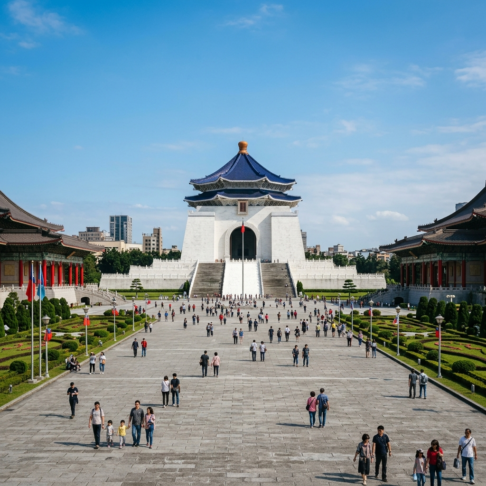
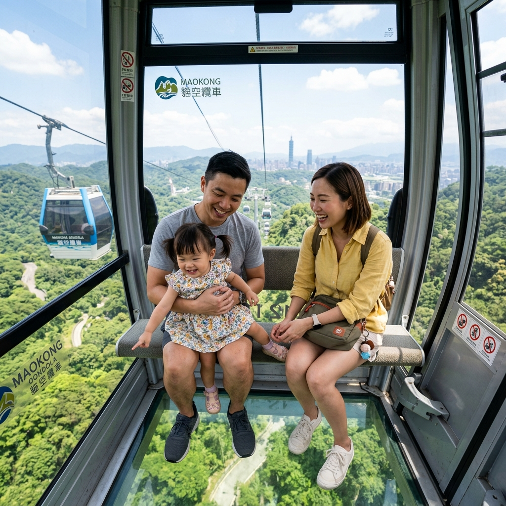
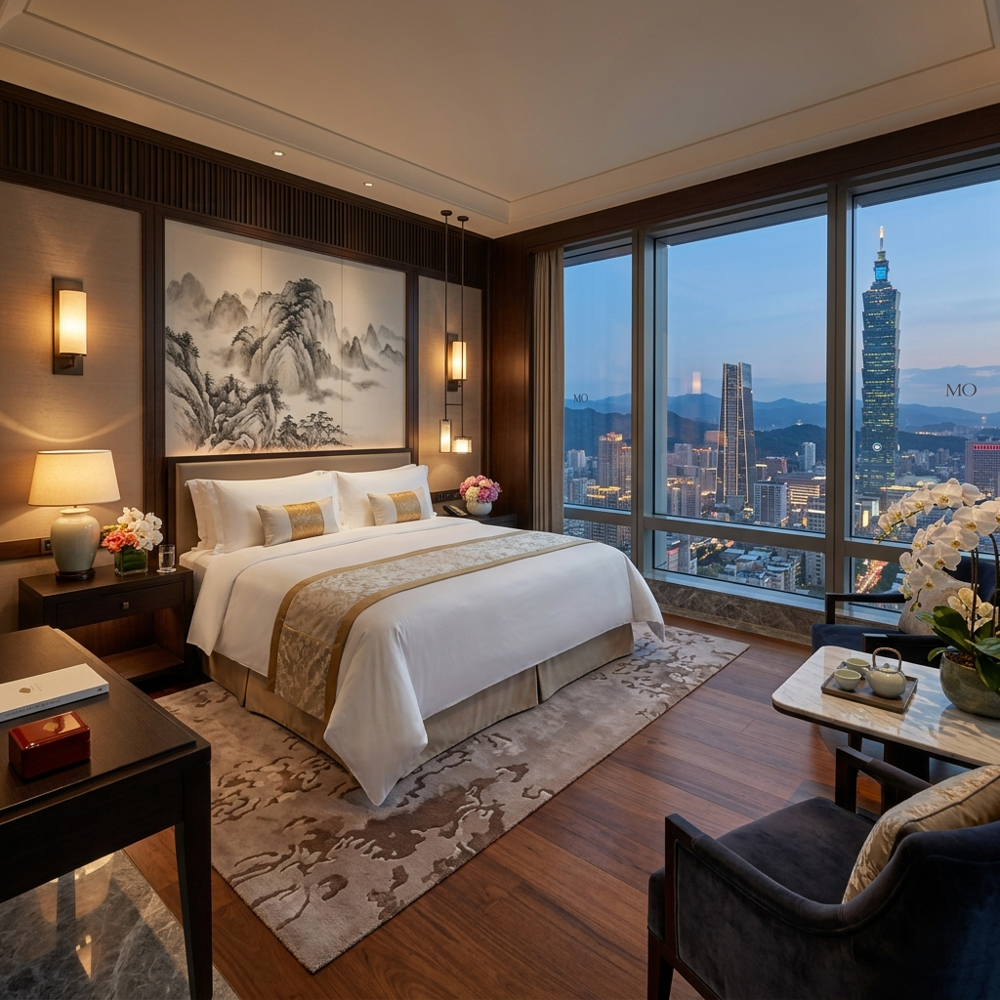

서울 김포공항 → 타이베이 송산공항 · 4박 5일의 특별한 여행
따뜻한 봄날, 가족과 함께하는 대만 타이베이 여행입니다.
25개월 아기 컨디션을 고려한 여유로운 일정입니다.


회원님이 확정하신 이스타항공편 일정 및 기타 참고용 비교 리스트입니다.
이미 확정된 숙소입니다. 12세 이하 아동 무료 투숙 가능합니다.

| 항목 | 만다린 오리엔탈 ✓ | W 타이페이 | 그랜드 하얏트 |
|---|---|---|---|
| 1박 평균 가격 | $400~600 | $250~400 | $200~350 |
| 4박 예상 총액 | $1,600~2,400 | $1,000~1,600 | $800~1,400 |
| 컨셉 | 클래식 · 궁전 스타일 | 모던 · 트렌디 | 전통 럭셔리 |
| 위치 | 쑹산구 (아레나역) | 신이구 (101 인근) | 신이구 (101 바로 옆) |
| 객실 크기 | 장점 시내 최대 수준 | 보통 | 보통~넓음 |
| 아기 동반 | 장점 조용 · 유아 침대 | 단점 파티 분위기 | 장점 가족 친화적 |
| 서비스 | 장점 최고 수준 | 좋음 | 좋음 |
| 수영장 | 야외 온수 | 루프탑 (성인 위주) | 실내 |
| 쇼핑 접근성 | 단점 택시/MRT 필요 | 장점 최고 | 장점 우수 |
| 종합 추천 | 🥇 아기 동반 최적 | 커플 · 젊은 층 | 관광 · 비즈니스 |
확정 비용 + 예상 비용을 포함한 전체 경비입니다. (환율: 1 TWD ≈ 47.29 KRW 기준)
대만은 아기 동반 가족여행에 매우 친화적인 나라입니다.
대만 여행 중 꼭 필요한 간단한 문장들입니다.
클릭하면 체크됩니다. 출발 전에 하나씩 확인하세요!